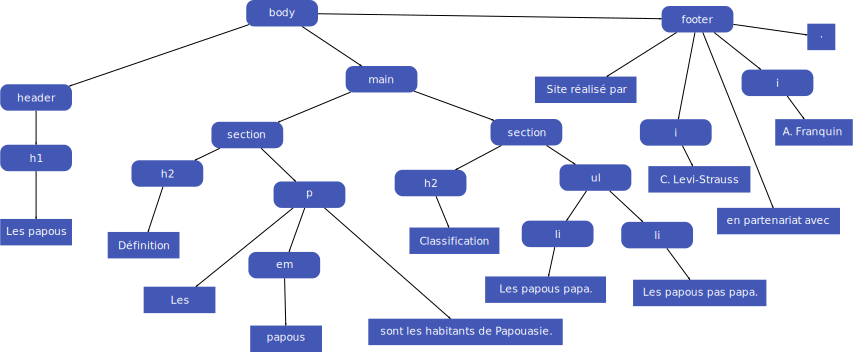

Compte rendu du TP2
I. Introduction
Ajout d'un fichier de style css
On crée un fichier index.css dans le dossier ./css/ contenant les règles de mises en page suivantes
p { color:blue; background-color: #fcf9d9; }
h1 { /* On veut mettre un cadre coloré au titre. */
border-color: rgb(40, 200, 100); /* Par défaut, le cadre est invisible ; on le rend visible. */
border-style:solid; /* On centre le texte dans le cadre. */
text-align: center;
}
On constate que la mise en forme prends effet dès l'attachement de la feuille de style.
- Les paragraphes de type ‹p› sont désormais avec un fond jaune clair encodé en hexa #fcf9d9 et la couleur de police est bleue
- les Titres de type ‹h1› sont désormais encadré en vert et le texte est centré dans le bloc
Quelques questions sur la couleur
À quoi correspond rgb(120, 56, 13) en hexadécimal ?
Le format RGB est un format de codage de couleur basé sur la propriété physique de l'additivité des couleurs primaires. En composant le rouge (Red), le vert (Green) et le bleu (Blue) on peut reproduire le spectre complet de la lumière, et donc (presque) toutes les couleurs, ici rgb(120, 56, 13) donne du maron.
- (160)_8 = (78)_16
- (56)_8 = (38)_16
- (13)_8 = (0D)_16
En hexadecimal on change en base 16 les digits octaux du code RGB (78380D)_16
Combien de couleurs chacune de ces trois méthodes (rgb, hexa ou nom de couleur) vous permettent d'obtenir ?
Etant donné que les couleurs sont encodées numériquement, il existe un nombre finis de couleurs possibles dans chaques encodage.
- RGB encodé avec un triplet d'octets en base 10 {255,255,255} ainsi 256^3=16 777 216. A noter que la méthode Rgb propose également un canal pour gérer la transparence
- HEXADECIMAL meme fonctionnement que RGB avec les octets codés en Hexadecimal. Même nombre de couleurs encodable
- Noms de couleurs système X11 limité(148 couleurs nommées)et peu commode. En revanche, les couleurs peuvent être assez ternees à l'impression
Les système RGB/HEX sont assez semblable à l'usage mais en pratique ils ont tout les deux des avantages(et des inconvénients ).
RGB est plus intuitif pour peu qu'on soit à l'aise avec la colorimétrie et sans avoir la contrainte de convertir de base 10 a 16. On quantifie les couleurs proportioneellement entre 0 et 255 sur les différents spectre.
HEX présente une simplicité d'encodage et de manipulation de donnée informatiquement du fait de son format Hexadecimal plus généralement utilisé en informatique.
le systeme X11 est plus simple pour le néophite qui peut choisir les couleurs frace à un étalon et les référencer en utilisant un nom plutot qu'un code. De plus ce sont des couleurs normalisées utilises dans les système informatique utilisant le moteur graphique X11. Ces couleurs se distinguent par leurs qualité.
II. CSS: "Feuilles de styles en Cascade"
Le DOM"Document Object Model"
La structure d'une page html peut être vue comme une organisation en arbre dont la racine est le noeud html> d'où naitra l'arborescence de la page. L'arbre est considéré comme un objet que l'on nomme DOM qui sera l'interface de la page HTML mais est aussi utilisé dans d'autres formats ( xml, svg ... ) qui organisent l'information de manière structurée.
Le DOM est donc un ensemble de noeuds qui peuvent être de deux types :
- Les noeuds éléments: qui sont associés aux balise, ils peuvent être attachés à des fonctions de gestion d'évènements
- Les noeuds de type texteen bout de "branche" (on parle de feuilles) qui contiennent l'information, esentiellement du texte
En réalité, il existe d'autres types de noeuds : les commentaires , les espaces, les documents ... ils seront abordés par la suite
La Notion d'héritage
Le CSS attache des règles de styles à des balises. Ces règles s'appliquent à ces balises mais également à toutes celles qui en découlent (en héritent) jusqu'à la fin de la branche. Ainsi, si une nouvelle règle est définie dans un noeuds fils, celles ci s'applique à tous les noeuds enfants de celui-ci quite à redéfinir des règles établies jusqu'à lors.
En théorie, la règle la plus sécifique l'emporte sur la plus générale mais dans les faits, d'autres critères entrent en jeux pour déterminer quelle est celle qui sera appliquée
Exercice
Voici un exemple d'arbre DOM qui sera l'occasions de quelques quuestions
- Combien cet arbre a t-il de noeuds ?
Au tôtal, l'arbre est constitué de 29 noeuds
- 12 noeuds de type texte (les feuilles )
- 17 noeuds de type éléments
- Ecrire le co de HTML correspondant à ce DOM
<body>
<header>
<h1>Les papous </h1>
</header>
<main>
<section>
<h2>Définition</h2>
<p>
les
<em>papous</em>
sont des habitants de papouasie
</p>
</section>
<section>
<h2>Classification</h2>
<ul>
<li>Les papous Papa</li>
<li>Les papous pas Papa</li>
</ul
</section>
</main>
<footer>
Site réalisée par
<i>C. Lewi-Strauss</i>
en ppartenariat avec
<i>A.Franquin</i>
.
</footer>
</body>
Les sélecteurs simples
Les sélectecteurs définissent les éléments sur lesquels s'applique un ensemble de règles CSS. Il y a plusieurs familles de sélecteurs
Les Sélecteurs de type
Ce sélecteur permet de cibler les éléments qui correspondent au nom indiqué.
Syntaxe: nomElement
Exemple: input permettra de cibler n'importe que élément <input>
Exemple: em {color:red;} permettra de fixer la couleur en rouge du texte contenu par la balise.
Les classes
On peut associer à un élément HTML une ou plusieurs classses en ajoutant un attribut class dans la balise. Cette classse permet entre autre de lui attacher une mise en forme définie en CSS
Si l'on définis une <code class="python"> on peut lui attacher la mise en forme suivante .python {background-color: yellow;}
ou encore
code.python {background-color: yellow;}
Plusieurs classes peuvent être attachée à une même balise : Comment le choix se fait il pour la mise en forme? Ce sera la dernière mentionnée dans le fichier CSS!
Une balise <i classs="new pin"> est associée à 2 classe(new et pin): l'ordre d'atribution des classes n'a pas d'importance, c'est leurs ordre de définitions dans le fichier CSS qui déterminera l'application finale en cas d'égalité.
Les identifiants
Ce sélecteur permet de cibler un élément en fonction de la valeur de son attribut id. Dans un document il ne peut y avoir qu'un seul élément pour un identifiant donné et les noms d'identifiants sont sensibles à la case !
Syntaxe: dans la balise <div id="intro"> l'id sera définis dans le css tel que #intro{color=red;}
Que choisir entre id et class?
Il faut se questionner :
- Le Style sera t-il propre à un seul Objet ? si oui id sinon class
- Ne veut on pas y accéder en utilisant un balise spécifique? Pas besoin d'identifier une balise titre avec un id si l'on veut appliquer les mêmes règles à tous les titres
Le sélecteur Universel
Le sélecteur * permet de créer des règles qui vont s'appliquer à tous les éléments de la page, sauf si une autre règle s'applique spécifiquement à m'élément.
Le sélecteur d'attribut
Ce sélecteur permet de cibler des éléments d'un documents en fonction de la valeur d'un de ces attributs
Quelques propriétés courantes
Propriété de texte
Propriétés CSS pour paramétrer le texte
- color : couleur de texte
- font-family: police de caractère
- font-size: Taille de police
- font-weight Mise en Gras
- font-style: Mise en italique
- text-align: Alignement horizontal
boites
les éléments d'une page web peuvent être vus comme des boites, on parle de box model
| Propriété | Valeurs (exemples) | Description |
|---|---|---|
| background-color |
red #A05F23 rgb(100,50,30) rgba(50,30,60,.5) |
Couleur du fond. |
| opacity | 0.4 40% | Opacité : 0 (transparent) ⟶ 1 (opaque). |
| background-image | url("img/fond.png") | Image de fond. |
| width | 200px 50% |
Largeur de la boîte. Voir aussi min-width et max-width. |
| height | 200px 50% |
Hauteur de la boîte. Voir aussi min-height et max-height. |
| border | solid red #AF2B54 2px dotted dashed... |
Propriétés du cadre. La valeur solid correspond à un cadre simple (par défaut, il est invisible, ce qui correspond à la valeur none). Voir aussi border-top, border-left, border-bottom et border-right. |
Listes
Sélecteurs avancés
Mise en pratique
sur le code html suivant, comment mettre un fond rouge à "chataignes" et un fond cyan à "couverture"
<body>
<h1>Préparatifs pour l'hiver</h1>
<ul>
<li>Prévoir :
<ul>
<li>du <em>pain</em></li>
<li>du <em>chocolat</em></li>
<li>des <em>oranges</em></li>
<li>quelques <em>châtaignes</em>
</li>
</ul>
</li>
<li>une bonne <em>couverture</em><
/li>
</ul>
</body>
Exercice selecteurs simple
Le code CSS correspondant :
body>ul>li~li>em{
background: cyan;
}
ul ul li~li~li~li>em{
background: red;
}
Exercice selecteurs par attributs
Exercice selecteurs par attributs
Le code css correspondant :
[href^="mailto:"]{color: green;}// liens mail en vert
[href*="#"]{color: red;}// liens interne
[href*="http"]{color:purple;}// liens externes
Pseudos classes et pseudos éléments
Pseudo-classes
Sytaxe d'une pseudos classes :nom_pseudos_classe
Modification du survol des titres avec la souris
h3:hover{color: hotpink;}
Différence entre p:hover et p :hover?
p:hover permet de de cibler la balise a lorsque elle est survolée, p :hover seemble ne pas fonctionner et ne pas être accepté pas le css
Pseudos-éléments
Un pseudos élémentsont des fragements de texte qui ne sont pas des noeuds ( des feuilles )
Syntaxe: ::nom_pseudo_element
Exercice pseudos élément: modifier le premier et derniers caractère d'une citation
Le code CSS correspondant :
q::first-letter{: pink;}
q::last-letter{color: pink;}
Règles de priorité
Exercice
<body>
<h1>Ma page</h1>
<p id="intro" class="important">Ceci est un paragraphe <em>assez remarquable</em>.</p>
<p class="important">Et que dire de celui-ci ?</p>
</body>
-------------------- Le CSS -------------------------
* {
color:brown;
font-family: fantasy;
}
body {
color:red;
}
#intro {
color:violet;
}
p {
color:orange;
}
p.important {
color:green;
}
body .important {
color:blue;
}
Le rendu du code avec le css correspondant :
page exemple
Que se passe t-il ?:
La priorité des éléments se fait pour la balise la plus spécifique d'abord puis par ordre de déclaration.
ainsi :
- pour l'affichage Ma page est un h1 appartenant a body elle est désignée de maniere spécifique par * qui repere toutes les balises et donc en marron
- pour l'affichage Ceci est un parapgraphe est un p id="intro" class="important" Les prétendant serait donc { *, body,#intro, p, p.important, body .important} le plus spécifique ici est l'usage de l'id=intro
- pour l'affichage Assez remarquable est une em qui n'est pas surchargée depuis * ce sera donc marron
- pour l'affichage Et que dire de celui ci ? est un p class="important" spécifique aux membres de la classe important inclus dans body